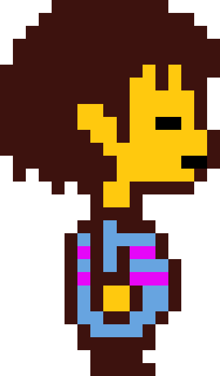

<section id="undertale-navigation-menu-container" @fadeIn_fadeOut_longer>
  <div id="navigation-bg-container" [class.flying]="isFlying()">
    <div id="navigation-menu-container">
      <span id="navigation-menu-fly-span">{{
        "THEMES.GAMES.UNDERTALE.HOME.NAVIGATION-MENU.FLY" | translate
      }}</span>
      <div id="navigation-menu-btns-container">
        <button
          class="navigation-menu-btns"
          mat-icon-button
          [disabled]="isFlying()"
          (mouseenter)="mouseEnterOrLeaveSFX()"
          (click)="playClickSound(); changeToNextLocation('previous')"
        >
          <mat-icon>keyboard_arrow_left</mat-icon>
        </button>
        <span id="navigation-menu-location-span">{{
          "ROUTER." + locationPages[currentLocation()].toUpperCase() | translate
        }}</span>
        <button
          class="navigation-menu-btns"
          mat-icon-button
          [disabled]="isFlying()"
          (mouseenter)="mouseEnterOrLeaveSFX()"
          (click)="playClickSound(); changeToNextLocation('next')"
        >
          <mat-icon>keyboard_arrow_right</mat-icon>
        </button>
      </div>
      <button
        id="navigation-menu-go-btn"
        mat-button
        [disabled]="isFlying()"
        (mouseenter)="mouseEnterOrLeaveSFX()"
        (click)="playClickSound(); startFlight()"
      >
        {{ "THEMES.GAMES.UNDERTALE.HOME.NAVIGATION-MENU.GO" | translate }}
      </button>
    </div>
    
    
    
  </div>
</section>
